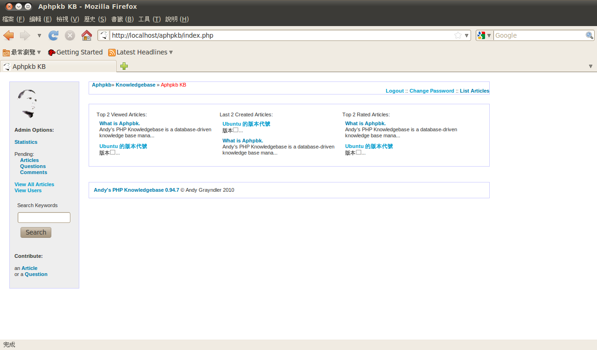

也紀念我們永遠的朋友 李士傑先生（Shih-Chieh Ilya Li）。
傳承知識的網頁平台 - Aphpkb
簡介
人類出現在地球的歷史，大約可以追溯至 250 萬年前。乍看之下 250 萬年是個相當久遠的時間，但與地球誕生至今大約有 46 億年的時間相比，在時間軸上的比例卻毫不足道。人類的歷史雖短，但卻是現今地球上的主要生物。人類之所以能在如此短暫的歷史中佔有今日的地位，依靠的不僅僅是人類的智慧，還有將知識傳承至下一代的能力。
也因為知識傳承對於人類是如此重要，許多機關組織也相當重視相關的議題，並且致力於提供一個更完善的知識傳承平台，以便讓更多人可以因此而受惠。這裡指的知識可以是任何主題，無論是專業技術上的創新與突破，或是社群中共同關心的話題，都可以視為是可傳承知識的一種。但有了知識與進行傳承的心意還不夠，因為沒有可以作為知識傳承的平台，即使有再多的知識也無法順利或有效的傳遞下去。
本文所要介紹的 Andy’s PHP Knowledgebase（以下稱 APHPKB），本身便是一套知識管理系統。APHPKB 可以獨立運作，成為一套提供眾人使用的知識分享平台；亦可與公司或組織現有的網站系統進行整合，成為主網站的一部份。像 APHPKB 這樣的知識管理系統，也相當適合在各種組織或公司行號中使用。因為無論公司的產品為何，都可能會面臨客戶或使用者因為對產品的不了解而產生問題。若是網站之中可以提供類似這樣的知識管理系統，便可以作為客戶服務的功能之一，進而讓客戶更加了解產品本身的特性。

▲ APHPKB 的操作畫面
即使不對外開放使用，APHPKB 也相當適合作為公司內部的訓練或公告平台使用。許多時候公司針對新人進行訓練，採取的是集中上課的方式。這樣的方式雖然可以達到彼此互動或互相提問的效果，但也相當花費時間。如果可以將常見的問題使用 APHPKB 所提供的功能直接公佈在網頁上，直接要求新人上網查看即可了解公司的基本規定。技術部門也會是相當適合使用 APHPKB 的單位之一，舉例來說，許多產品的開發過程有其歷史因素，除非是從產品開發初期便已經參與的人員，否則到最後恐怕很難回答出為何產品會以現今的方式存在。 但如果將所有的開發流程，或是所有的決策過程以網頁文件的方式存檔，在有新人加入此產品的開發或維護團隊時，便能從此系統之中得到相當詳細的資訊，並在最短的時間內了解此產品當初開發的來龍去脈。
APHPKB 的特色
目前許多開放原始碼的網站系統，採用的都是時下最為流行的 LAMP 架構，APHPKB 也不例外。身為知識管理系統的 APHPKB ，本身需要用資料庫進行內容管理，以作為各種資料的儲存場所，因此直接採用 MySQL 資料庫系統進行相關的管理工作。而在初次安裝並需要建立新資料時， APHPKB 本身亦提供相關的 SQL 指令檔，只需要以 MySQL 的匯入資料功能將相關的表格結構輸入，即可完成所有資料庫表格的建立工作。
雖然牽扯到 Web Server、資料庫以及 PHP 語言等三種不同的系統，但 APHPKB 本身的安裝過程並不困難，稍有經驗的系統管理員都能在短時間內完裝完畢。APHPKB 採用的是串流式安裝介面，只需要注意網頁伺服器之中相關目錄的存取權限設定，再依照安裝網頁上的指令進行操作，即可順利完成整個安裝作業，並開始使用 APHPKB。
在 APHPKB 之中，會以文章與問答集的二種方式提供資料的存取介面。前者是一篇篇擁有特定主題的文章，通常會是針對某種議題進行詳細解說的參考資料。至於問答集的使用時機，則是在使用者對於某事項有任何不了解之處時，可以利用此功能提出自己的問題，並等待負責人員的解答。至於許多網站或文件會採用的常見問答集（FAQ）型式，也相當適合使用 APHPKB 的問答功能進行實現。
▲ APHPKB 採用 HTML 編輯器以進行資料編輯
如果文章或問答的內容相當充實，大多數人會選擇將該網頁直接儲存在瀏覽器的書籤之中，以便將來在有需要的時候，再次找到同一個網頁。APHPKB 針對瀏覽器的書籤功能，則是提供了相當友善的網址連結設計，因此在網頁加入瀏覽器的書籤之後，可以快速地重新回到此系統的網頁之中，省下不少尋找正確網頁的困擾。
而在系統運行一段時間之後，資料庫中的文章數量或問答題庫的資料量可能都會變得相當龐大，若是單純地使用條列式方式顯示所有的資料，對於使用者的操作觀感方面可能會造成負面影響，尋找資料時也會顯得十分緩慢。為了避免這樣的問題發生，APHPKB 本身內建了一個搜尋介面，可以讓使用者採用關鍵字進行搜尋。系統會在比對出結果後，直接將所有相關資料顯示在畫面上，使用者直接點選顯示在畫面上的連結， 即可查看文章或問答集的內容。由於關鍵字搜尋的功能相當容易使用，因此無論使用者是否熟悉網頁介面，都能在很短的時間內取得自己所需要的資料。
▲ APHPKB 內建資料搜尋功能
除了採用搜尋的方式尋找資料以外，APHPKB 也提供了其他方便的瀏覽操作模式，例如以文章標籤進行所有資料的閱覽即為一個例子。以文章標籤作為瀏覽資料的方式，除了可以很明確的得知文章本身相關的主題以外，也能在需要同時查詢某個相關主題文章時，以最快的速度找到所有相關資料。
如果希望提供文章至 APHPKB 的系統之中，並不一定需要申請此系統的帳號，因為 APHPKB 本身也允許匿名使用者貢獻文章或問答集。這樣的設計方式，自然是希望有心想提供資訊到系統中的人，無論是否擁有帳號，都能隨時發表文章以增加系統內容的可看性。畢竟申請帳號再進行驗證、登入等過程，多少需要花費一點時間。在這些等待的時間當中，已經足以建立一篇新文章。再加上許多人並不喜歡註冊太多網站， 因此看到需要登入才能使用的系統，很可能會選擇直接離開。
但系統管理者也不需要因為所有人都可以發表文章而感到疑慮，認為系統一定會變得相當凌亂。因為文章發表後，系統並不會直接將這篇新文章開放存取，而是要等到系統管理員進行檢查，確認文章內容符合需求後，才會正式開放此文章。因為最後的把關者仍然是系統管理員，所以使用者發表文章的過程，基本上並不是真正的毫無限制。
▲ 管理畫面可以審核、編輯或刪除文章
除了閱讀文章或是發表文章以外，使用者也能對有興趣的文章發表評論，並在系統中存入自己對某篇文章的看法。與文章發表相同，使用者發表評論後，也不會立即顯示在畫面上，而是要等待系統管理員進行審核，通過後才能顯示在畫面上。使用者無需登入即可進行操作，但把關權限仍然在管理員手上，同時滿足方便性與系統安全二大需求。
另外，APHPKB 也針對系統管理方面提供許多功能。例如資料統計頁面這項功能，便是系統管理上不可或缺的重要項目。在此畫面中，系統管理員可以輕易得知目前是否有文章或是留言正在等待審核，以及篇數各有多少。至於已經通過審核的文章或是留言，也會一併在此畫面統計後進行顯示。文章與留言的總數，自然也是統計資料的一部份。 同樣的統計功能也會套用到問答集之中，無論是待審核、已審核或是全部的資料筆數，都可以在此畫面中找到相關訊息。
APHPKB 的統計畫面不但可以顯示與資料筆數相關的統計內容，另外也會針對 MySQL 資料庫的使用情況進行統計。舉凡資料庫已運行的時間，目前使用的執行緒數量，或是已開啟的資料庫表格，以及平均每秒的存取次數等資料，都會一併列在統計畫面中，以便作為系統管理上的參考資料。如果覺得系統執行速度變慢了，或許便可以使用此功能確認是否負載過重，導致系統反應速度下降。
如果文章或留言的內容有不恰當的訊息，管理畫面自然也提供了文章、問答集以及留言的刪除功能，可以將不需要或是不合適的資料直接刪除。如果資料只是有些過時， 但大致上仍然可以繼續使用，則可以考慮利用編輯功能加以修改，以提供更即時的資訊。至於使用者所提出的問題，系統管理員也可以直接回覆，或是加以刪除。
▲ 資料統計畫面分別針對文章與系統二大部份進行統計
綜合而言，APHPKB 的使用介面相當清爽，也沒有太多不必要的元件擺放在畫面中，設計上顯得相當專業。而這樣的設計對於吸引使用者的目光並且進而前來使用此系統，也會產生一定的功效。
結語
由於一般人的壽命只有短短數十載，能習得的知識十分有限，因此如何以各種方式將先輩所學習而來的知識持續發揚光大，會是影響後代子孫是否過著更好生活的主要原因。如果人類無法將知識傳遞至下一代，只怕人類至今仍然停留在石器時代，甚至是更古老的原始時代，而無法有一絲一毫的進步。
或許 APHPKB 未必是最佳的知識管理平台解決方案，但這樣的系統至少提供了一個基本的架構，可以讓有心發展知識管理平台的使用者作為參考之用。如果可以和現有的網站系統整合，也會是一種相當不錯的搭配方式。
◎ 作者簡介
翁卓立，逢甲大學資訊工程學系畢業，現為台灣科技大學電子所在職專班學生。目前擔任韌體研發工作，主要使用 Embedded Linux 進行產品開發。著有「Linux 進化特區：Ubuntu 9.04 從入門到精通」等書。
Address：No.128, Sec.2, Academia Rd., Institute of Information Science, Academia Sinica, Nangang District, Taipei City 11529, Taiwan (R.O.C).
Privacy Policy. Terms-of-use